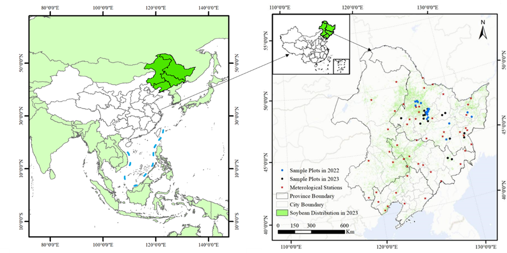
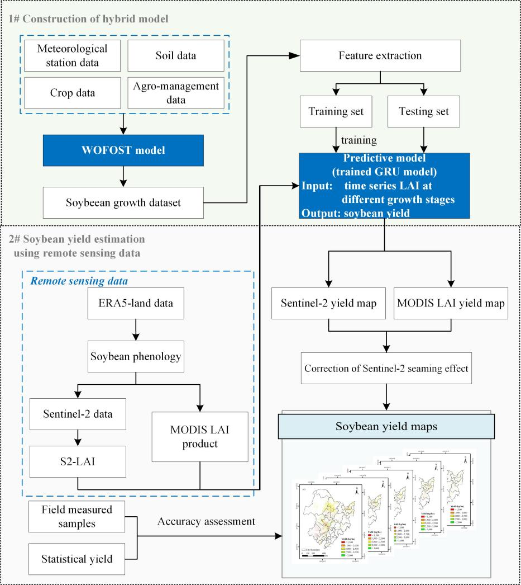
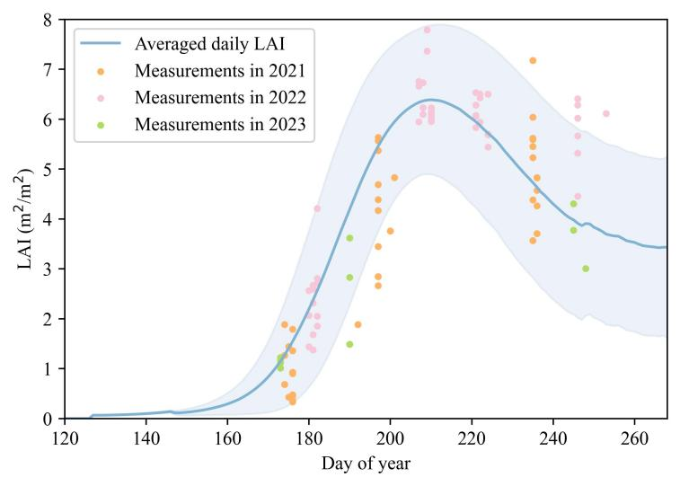
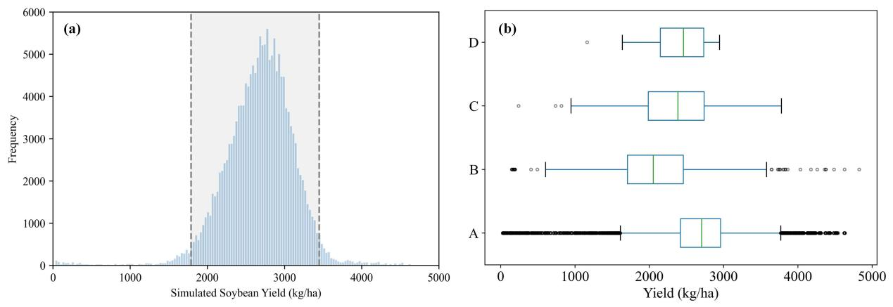
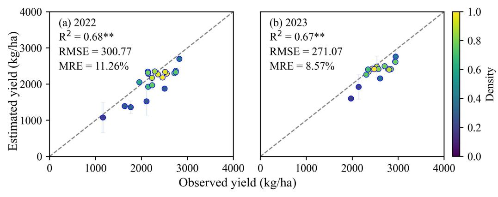
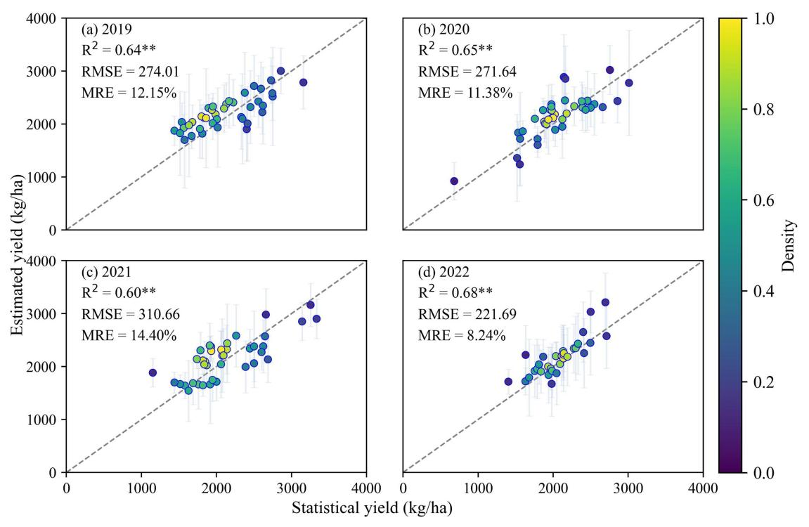
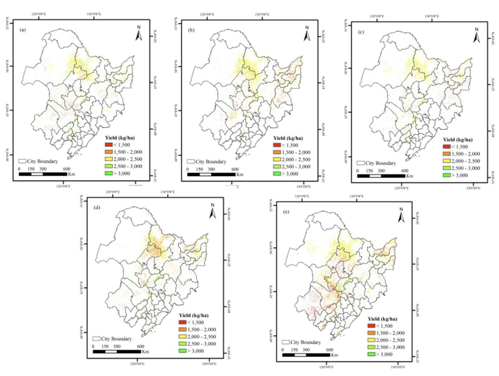

22 Remote Sensing Estimation of Soybean Yield Based on Multi-Scenario Simulation
22.1 Introduction
Food security is critical for national stability and sustainable development. Accurate crop yield monitoring provides essential data for policy-making, precision agriculture, and agricultural finance. Remote sensing enables large-scale, dynamic crop monitoring, supporting yield estimation through vegetation indices and other biophysical parameters. Traditional methods rely on empirical models using remote sensing data, while machine learning improves accuracy but faces challenges due to limited training samples and cloud-affected data. Crop growth models, based on agronomic mechanisms, offer higher precision but require complex parameterization processes. Recent advances integrate remote sensing with crop models via data assimilation, balancing accuracy and scalability. However, computational complexity and retrieval errors remain constraints. To address these limitations, this case introduces a hybrid modeling approach combining machine learning with crop growth models, enhancing yield estimation accuracy, automation, and spatiotemporal generalization for soybean production.
22.2 Experimental Area and Data
This case selects the black soil region of Northeast China as the research area, covering Heilongjiang, Jilin, Liaoning provinces, and the eastern part of Inner Mongolia Autonomous Region, totaling 40 prefecture-level cities with an area of approximately 1.24 million square kilometers (Figure fig-1-cy-china). The Northeast region is the main soybean-producing area in China, accounting for approximately 64% of the country’s annual production. Around 97% of the soybeans are rain-fed during the growing season [1] [2], which extends from May to late September [3].
Ground surveys were conducted in 2022 and 2023, collecting soybean yield data from 21 and 18 sample plots, respectively. Each plot contained nine randomly placed 1×1m quadrats, with harvested samples oven-dried to determine yield. Sowing dates were recorded during fieldwork. Leaf Area Index (LAI) data were obtained from the ground-based CAPLOS platform
Ground surveys were conducted in 2022 and 2023, collecting soybean yield data from 21 and 18 sample plots, respectively. Each plot contained nine randomly placed 1×1m quadrats, with harvested samples oven-dried to determine yield. Sowing dates were recorded during fieldwork. Leaf Area Index (LAI) data were obtained from the ground-based CAPLOS platform from AIR Centre of the Chinese National Academy of Sciences, covering three growing seasons (2021-2023). Meteorological data included variables (temperature, precipitation, wind speed, etc.) from 51 weather stations (1980-2021) near soybean-growing areas, supplemented with ERA5-Land reanalysis data for phenology estimation.
Soil data were sourced from the 1:1,000,000-scale digital soil database of the Institute of Soil Science, Chinese Academy of Sciences [4]. Remote sensing data included Sentinel-2 and MODIS LAI products [5] for regional soybean yield estimation, with MODIS-derived yields used to correct Sentinel-2 biases. Soybean distribution maps were derived from Zhao et al.’s OIF knowledge graph and distance-preserving segmentation method (accuracy >90%) [6]. Historical provincial yield statistics (1980-2022) from statistical yearbooks were used for model validation and regional-scale accuracy evaluation.
22.3 Methods
The technical workflow of the hybrid methodology for soybean yield estimation is shown in Figure fig-2-cy-china. It includes the following key steps: 1) Generating a training dataset based on the WOFOST model that simulates soybean growth and yields under various climates, soil, cultivars and agro-management practices, 2) Training a GRU model to identify the relationships between simulated LAI and yield, 3) Producing soybean yield maps under multi-scale using LAI derived from MODIS and Sentinel-2 remote sensing data and 4) Accuracy evaluation using field-measured and statistical data.

A process-based WOFOST crop growth model [7] was employed to simulate soybean development and yield formation under diverse scenarios. By integrating 42-year meteorological data from 51 stations, 4 soil types, 5 soybean varieties, and 4 sowing dates, a comprehensive dataset of 171,360 simulated scenarios was generated to support yield estimation.
Deep learning techniques were applied to identify key yield-related indicators from the simulated dataset. A Gated Recurrent Unit (GRU) model [8] was trained and dynamically optimized [9] to establish robust yield prediction relationships.
The experimental area was stratified by accumulated temperature zones to account for maturity differences. Phenological stages were determined, and LAI (a critical yield indicator) was retrieved from remote sensing data using empirical methods [10]. The trained GRU model was then applied to generate multi-year spatial yield distribution maps.
Model performance was evaluated using field-measured yield data and municipal-level statistical yield records, ensuring reliability across scales.
22.4 Results
To validate the reliability of simulated LAI data, this case compared field-measured LAI (2021-2023) with 5,000 randomly selected LAI curves from the multi-scenario simulation dataset (Figure fig-3-cy-china). The results demonstrate strong consistency between simulated and observed LAI trends, with approximately 88% of field samples (n = 83, where n represents the number of observed samples within the simulation range) falling within the simulation envelope. This confirms that the WOFOST model effectively captures soybean growth dynamics, ensuring high-quality training data for the GRU model.

The simulated soybean yields exhibited a normal distribution with a mean value of 2675.66 kg/ha, covering a wide spectrum from low to high yield scenarios. As shown in Figure fig-4-cy-china, the simulated dataset showed the most comprehensive yield distribution range when compared with historical statistical records (1980-2022), documented yields in literature, and field-measured yields (2022-2023). This comparison confirms both the inclusiveness of the multi-scenario knowledge base and the reliability of the simulation framework. The robust and representative yield dataset provides a solid foundation for developing high-precision, fine-resolution soybean yield estimation models.

At the field scale, the yield estimation results demonstrated high accuracy when validated against field-measured yield data from 2022 and 2023, effectively capturing spatial yield variability. The estimated values showed strong correlation with observations (R² > 0.65, p < 0.01), with more stable performance and lower errors in fields exhibiting uniform yields. Across both years, the overall estimation accuracy reached R² = 0.73, RMSE = 287.44 kg/ha, and MRE = 10.02%. Notably, the highest precision was achieved in 2023 (RMSE = 271.07 kg/ha, MRE = 8.57%), confirming the effectiveness of the dataset for fine-scale yield estimation.

At the regional scale (municipal level), this case aggregated 2019–2022 yield maps to the corresponding administrative units and compared them with official statistics (Figure fig-6-cy-china). The estimates demonstrated strong inter-annual consistency, with correlation coefficients exceeding 0.60 (p < 0.01) across all years. The overall validation metrics showed R² = 0.62, RMSE = 272.36 kg/ha, and MRE = 12.08%, with optimal performance in 2022 (MRE < 10%). These results confirm that the hybrid modeling framework maintains robust stability and applicability at the regional scale.

The spatial distribution maps of remotely estimated soybean yields from 2019 to 2023 are shown in Figure fig-7-cy-china. Overall, the pixel-scale yield estimation not only captures yield information at a finer resolution but also demonstrates commendable performance at the municipal level. Furthermore, this method enables dynamic and flexible yield estimation based on available data, showing significant potential for large-scale soybean yield evaluation.

22.5 Discussion
The hybrid modeling framework developed in this case demonstrates significant advantages in improving soybean yield estimation accuracy and spatiotemporal generalizability. However, several limitations should be acknowledged. First, the model parameters were not calibrated through data assimilation, which could lead to relatively larger estimation errors in topographically complex regions. Second, the GRU model training process involves redundant information and potential overfitting issues, affecting its generalizability across years or regions. Additionally, uncertainties in remote sensing input data (e.g., LAI retrieval accuracy, mixed-pixel effects, and downscaling of ERA5 data) could further influence yield estimation precision. To enhance model applicability, future research should prioritize developing eco-regionalization frameworks based on climatic, topographic, and agricultural management factors to optimize parameters and minimize input redundancy. Additionally, integrating high-resolution environmental data with advanced data assimilation techniques could further improve model scalability and robustness in regional applications.
22.6 Conclusions
This case developed a 20 m-resolution soybean yield dataset for Northeast China (2019-2023) by integrating the WOFOST crop model with GRU neural networks and multi-source remote sensing/environmental data. The yield estimates demonstrated robust accuracy and spatiotemporal stability across validation scales, achieving a field-level RMSE of 287.44 kg/ha and municipal-scale mean MRE of 11.46%. MODIS data correction effectively mitigated Sentinel-2 image gaps, enhancing spatial consistency. The framework provides high-resolution, reliable support for precision agriculture implementation, regional yield monitoring, and food security policy-making, showing with the powerful potential for applications in developing countries lacking earth observations.
References
[1]
Y. Guo, H. Xia, L. Pan, X. Zhao, and R. Li, “Mapping the Northern Limit of Double Cropping Using a Phenology-Based Algorithm and Google Earth Engine,” Remote Sensing, vol. 14, no. 4, p. 1004, Feb. 2022, doi: 10.3390/rs14041004.
[2]
Q. Yu et al., “A cultivated planet in 2010 – Part 2: The global gridded agricultural-production maps,” Earth System Science Data, vol. 12, no. 4, pp. 3545–3572, 2020, doi: 10.5194/essd-12-3545-2020.
[3]
R. Zhao, Y. Li, and M. Ma, “Mapping Paddy Rice with Satellite Remote Sensing: A Review,” Sustainability, vol. 13, no. 2, p. 503, 2021, doi: 10.3390/su13020503.
[4]
X. Z. Shi et al., “Soil Database of 1:1,000,000 Digital Soil Survey and Reference System of the Chinese Genetic Soil Classification System,” Soil Survey Horizons, vol. 45, no. 4, pp. 129–136, 2004, doi: 10.2136/sh2004.4.0129.
[5]
Y. Knyazikhin, J. Glassy, J. Privette, Y. Tian, and S. Running, “MODIS Leaf Area Index (LAI) and Fraction of Photosynthetically Active Radiation Absorbed by Vegetation (FPAR) Product (MOD15) Algorithm Theoretical Basis.” NASA, 2018.
[6]
L. Zhao et al., “In-season crop type identification using optimal feature knowledge graph,” ISPRS Journal of Photogrammetry and Remote Sensing, vol. 194, pp. 250–266, 2022, doi: 10.1016/j.isprsjprs.2022.10.017.
[7]
C. a. van Diepen, J. Wolf, H. van Keulen, and C. Rappoldt, “WOFOST: A simulation model of crop production,” Soil Use and Management, vol. 5, no. 1, pp. 16–24, 1989, doi: 10.1111/j.1475-2743.1989.tb00755.x.
[8]
K. Cho et al., “Learning Phrase Representations using RNN Encoder–Decoder for Statistical Machine Translation,” in Proceedings of the 2014 Conference on Empirical Methods in Natural Language Processing (EMNLP), 2014, pp. 1724–1734, doi: 10.3115/v1/D14-1179.
[9]
M. Açikkar, “Fast grid search: A grid search-inspired algorithm for optimizing hyperparameters of support vector regression,” Turkish Journal of Electrical Engineering and Computer Sciences, vol. 32, no. 1, pp. 68–92, 2024, doi: 10.55730/1300-0632.4056.
[10]
N. Pasqualotto, J. Delegido, S. Van Wittenberghe, M. Rinaldi, and J. Moreno, “Multi-Crop Green LAI Estimation with a New Simple Sentinel-2 LAI Index (SeLI),” Sensors, vol. 19, no. 4, p. 904, 2019, doi: 10.3390/s19040904.